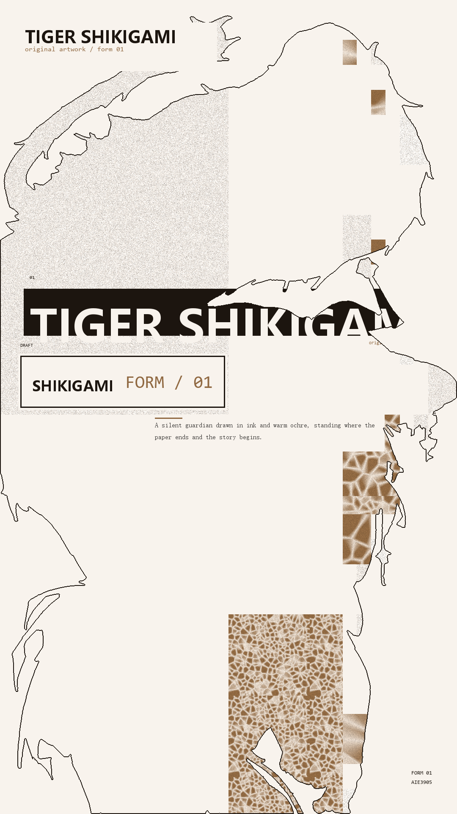
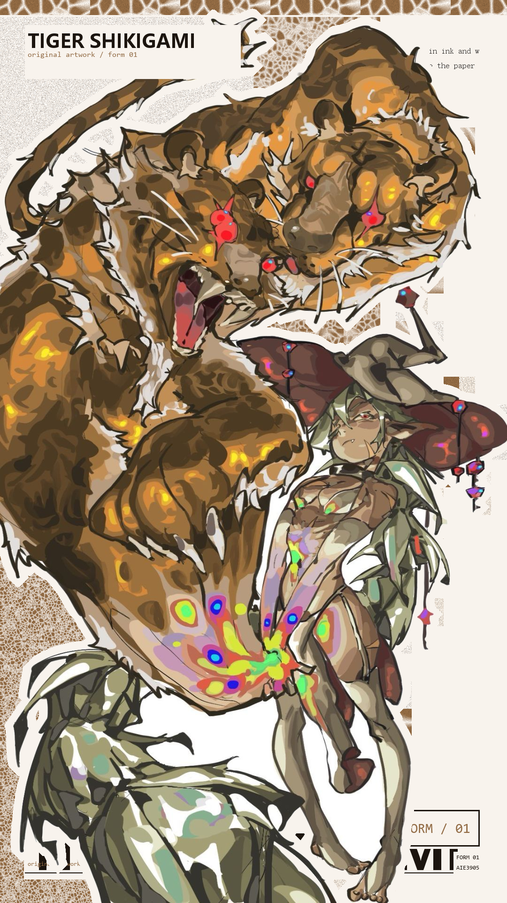
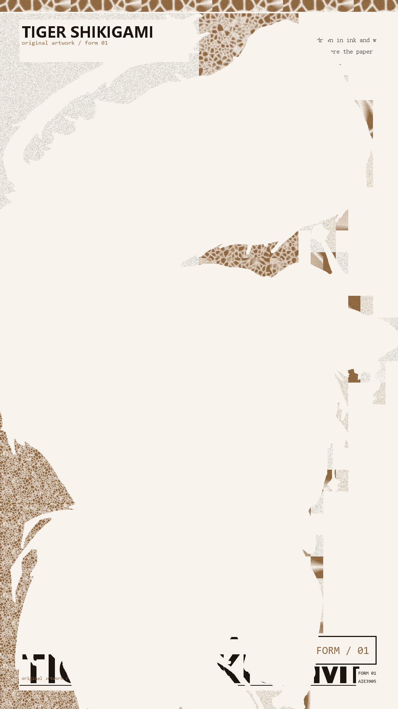

输入一张图加一段文案，输出一张海报：文字与图形组件被排进形状内部，构成那个形状本身。
一个把剪影和文案拼成海报的排版引擎。给一张图（人物剪影、物件轮廓）和一套文案， 它输出三张不同范式的主视觉 —— 远看是那个剪影，近看是排进去的文字和图形组件。
接受任意有清晰主体的图片，自动提取形状，把画布切成大小错落的矩形， 按层级分配成底纹、主标题、副标题、正文，再渲染成图。
配色不写死，从素材主体区域采样派生 —— 换一张图，配色跟着变，代码不用动。
常见的「文字排成形状」是把字逐行填进形状：沿扫描线摆字，挤满就换行。 这样做出来的图没有视觉层级 —— 所有字差不多大，远看是一块均匀的灰， 近看也读不出主次，因为标题和正文只差一两个字号。
这个项目的做法是先切块，再摆组件：
9:3:1:1 的面积预算把矩形分给
无意义底纹 / 主标题 / 副标题 / 正文四个层级。层级来自差异（字号跨度、组件形态、面积对比），不来自统一放大。
底纹一多就容易碎成马赛克。这里定了三条：
补色块 —— 无意义层里还有一个实心色块，颜色从采样主色色相转 180° 得来， 饱和度单独顶高（低饱和素材直接取补色会得到灰调，融进纸色里）。面积固定为画布 1/18， 贴着主体但绝不压到它；放不下整块就拆成多块，块与块的中心距不小于画布短边的一半 —— 分散是硬约束。
微观信息层 —— 沿文字组件外侧排一排 8–10px 的小字， 不承担阅读功能，作用是把大片留白「激活」。内容全部从已有文案派生： 标题的哈希当编号、副标题的首字母当缩写、正文里最长的词当关键词。 换素材换文案自动生成，不需要人配。
同一套排版层，区别只在它和形状的关系。后两种必须用贴边版式 —— 用版心版式会被剪影整个挖掉，只剩碎片。



photo 把原图贴上去、排版当背景；negative 让形状以留白出现。两者都贴画布边缘。
pip install -e . collage examples/tiger-shikigami.jpg \ --title "TIGER SHIKIGAMI" \ --title-sub "original artwork / form 01" \ --sub "SHIKIGAMI" --sub-en "FORM / 01" \ --body "A silent guardian drawn in ink and warm ochre." \ --out out/ 输出 out/剪影填充.png · out/原图加背景.png · out/背景负形.png
常用选项：--threshold 白底阈值 ·
--largest-only 只留最大连通域 ·
--paradigm 只出一种范式 ·
--tags 散落小标签 ·
--meta 右下角元信息
从原图主体区域取色，派生整套配色（强调色 / 墨色 / 纸色 / 底纹基色）。
选主色时按 饱和度 × 明度^2.2 打分 ——
只看饱和度会被深色轮廓和暗部拉偏，实测会选出深棕而非亮黄。
在线服务未开发。这个项目目前是 Python 库 + 命令行工具，本地运行、输出 PNG。 网页端需要把渲染层搬到浏览器或架一个服务，尚未做。
这里放的是仓库里真实跑出来的输出，不是效果图。